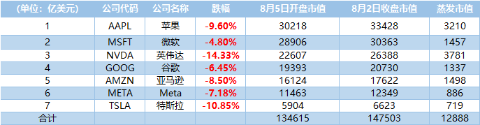
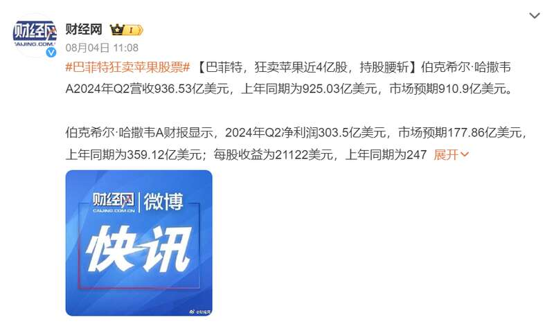
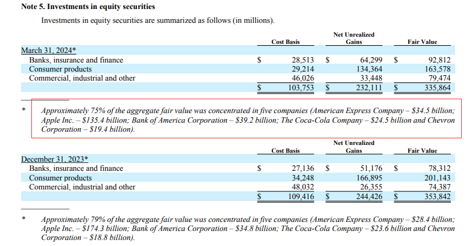
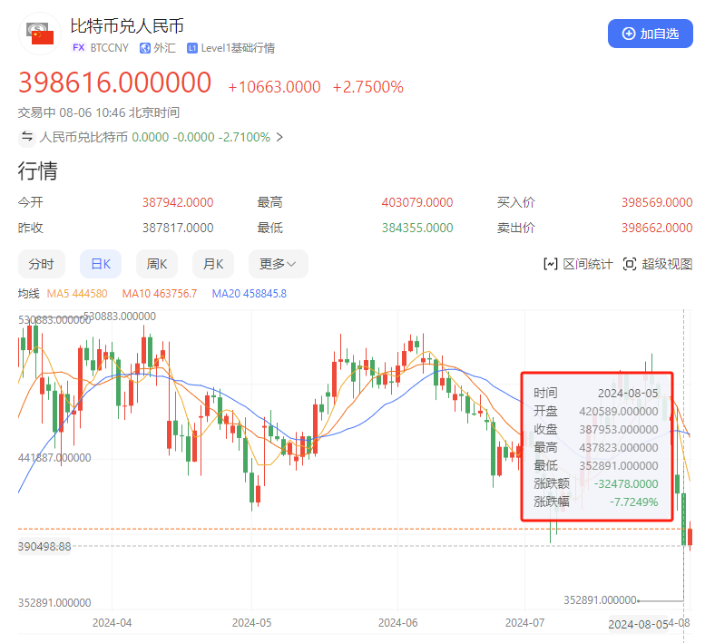

一场史诗级暴跌，正在蔓延至世界各国。由于中美时差的问题，美股深夜暴跌。8月5日晚，美股刚开盘，三大指数就集体暴跌，纳指跌超6%，标普500也跌超4%，道琼斯指数跌幅较小，但也有2.58%。跌得最惨的是美国科技股，包括英伟达、特斯拉、微软、谷歌、亚马逊、苹果等，全线大跌，市值蒸发1.29万亿美元，折合人民币接近10万亿了。

跌得最狠的是苹果和英伟达。刚开盘时，英伟达就猛跌了7%，苹果更是跌了10%。但随着交易量的提升，苹果跌幅收窄至3.68%。对苹果市值影响最大的是巴菲特旗下的伯克希尔·哈撒韦，今年以来已经减持超过一半的股票。在2023年底，伯克希尔·哈撒韦持有约1743亿美元的苹果股票，但如今只剩842亿美元了，卖出超过901亿美元。
为什么巴菲特疯狂甩卖苹果股票？在队长看来，主要有三个原因：一是，在美元疯狂印钞之下，美股被推到历史新高。但这种市值是不真实的，它挤满了泡沫。如今，美联储已经释放明确的信号，美元要准备降息了。也就是说，美元的通胀时代要结束了，接下来就是美国经济要挤泡沫了，以实现软着陆。

可软着陆是不容易的，成功了，美国就能开启下一轮繁荣周期。失败了，那就是次贷危机后的，新一轮美国经济危机。这就引出巴菲特减持苹果的第二个原因：安全第一，现金为王。在震荡期，是特别容易亏钱的。巴菲特手底下最大的包袱，就是苹果了。
2023年12月，伯克希尔·哈撒韦持有约1743亿美元的苹果股票，这个量太大了，找不到接盘侠，巴菲特吃到嘴里的肉，就全都要吐出来。可现在，它减持了901亿美元，只剩842亿了。这个包袱就被卸掉一半了，属于是轻装上阵了。按巴菲特的风格，他会继续减持，就像减持比亚迪一样，一旦开启，就毫不犹豫。当外界还沉浸在新能源的高潮之中，巴菲特已经开始收网，赚得盆满钵满，落袋为安了。苹果公司的市值大概率会反弹，但巴菲特的持仓不会反弹了。

三是，伊以矛盾持续恶化，中东战争正在外溢，对全球供应链会带来巨大的风险。越是跨国性的高科技公司，风险越大。就像胡塞武装，封锁红海，就一度让特斯拉柏林工厂停产。因为柏林工厂的很多核心零部件，都来自于中国。
在巨大的不确定性中，如何保护自己的资产？最简单的办法就是，减少投资，回收现金。在逆周期中，不投资，就是最好的投资，不亏钱，就等于是赚钱了。伯克希尔·哈撒韦持有的现金储备，已经高达2769亿美元。这些钱就存在银行，什么都不干，变成了“沉睡资本”。简单的翻译就是，找遍全世界，都找不出足够好的投资项目，那就把现金拿在手里，不投资。
当一个人有这种心理时，不算可怕。但当一群金融大鳄，都是这种心理时，美国各大资本都会加大甩卖力度，撤出美股。美股暴跌，也就形成了。美股一跌，欧洲股市、日韩股市，也跟着跌了，这就带崩了全球股市。除了股市，比特币也暴跌，超过20万人一夜爆仓。为什么会这样？因为美国政府也要出手抛售比特币，回笼资金了。

唯一坚挺的就是人民币了。在过去短短一周时间里，人民币狂飙猛进，暴涨1500点，人民币汇率升至7.13了。很多外贸公司担心受汇率冲击，导致利润减少，纷纷集中提前结汇，这进一步拉高了人民币汇率。按这个速度，今年底人民币就能重返“6”的区间。为什么人民币会暴涨？根源就在于，安全。
如今，人民币已经成为全球唯一的避险货币。美元降息，汇率下跌是100%的了。美元一跌，欧元也得跟着跌。那谁不会跌呢？纵观全球，就只剩人民币了。当全球资产上演大逃杀，人民币就成了一个独特的避风港。前些年，转出去的钱，也都纷纷往回跑。
而且，中国经济已经挤出泡沫，正在进入修复期，而美国经济却正在进入“挤泡沫”的阵痛期。从历史上来看，日元加息，是一个非常危险的信号。
进入21世纪以来，日元一共有过两次加息。第一次是2000年，结果2001年，美国就发生了互联网泡沫的破裂，全球互联网公司陷入低谷。第二次是2007年，紧接着，美国房地产就爆雷了，引发次贷危机。这一次，是日元第三次加息。它预示着什么？还没有人知道。但华尔街资本的嗅觉无疑是敏锐的，他们开始提前撤离股市。
一边是经济危机的前兆，一边是中东战争的外溢，外面的世界暗流涌动，危机四伏。如今的中国，反而成了全球稳定器。在这个波谲云诡的世界，守住财富，比什么都重要。